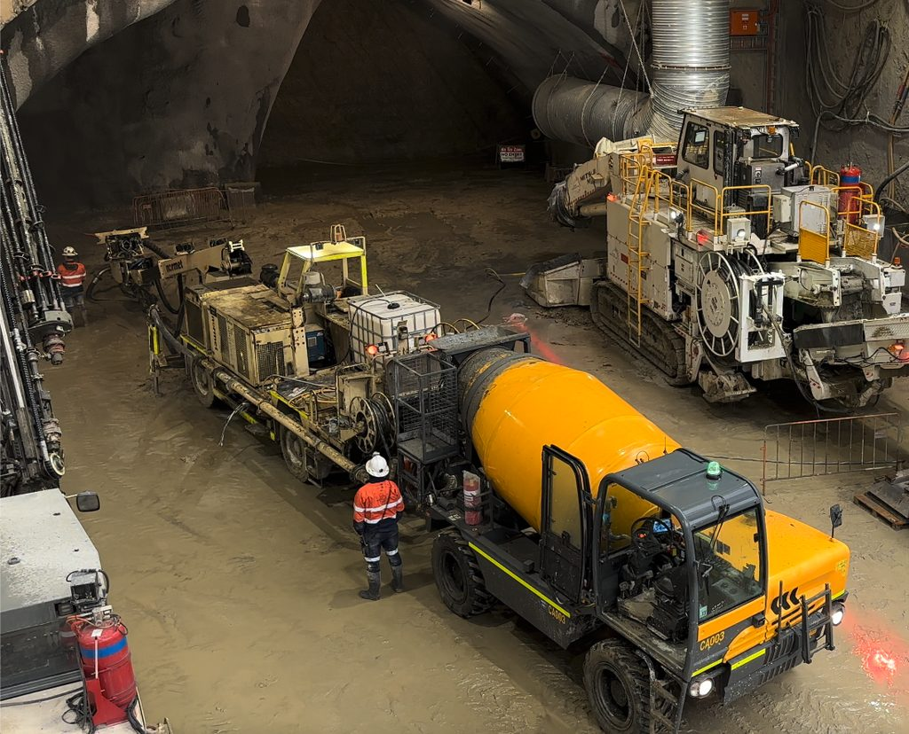
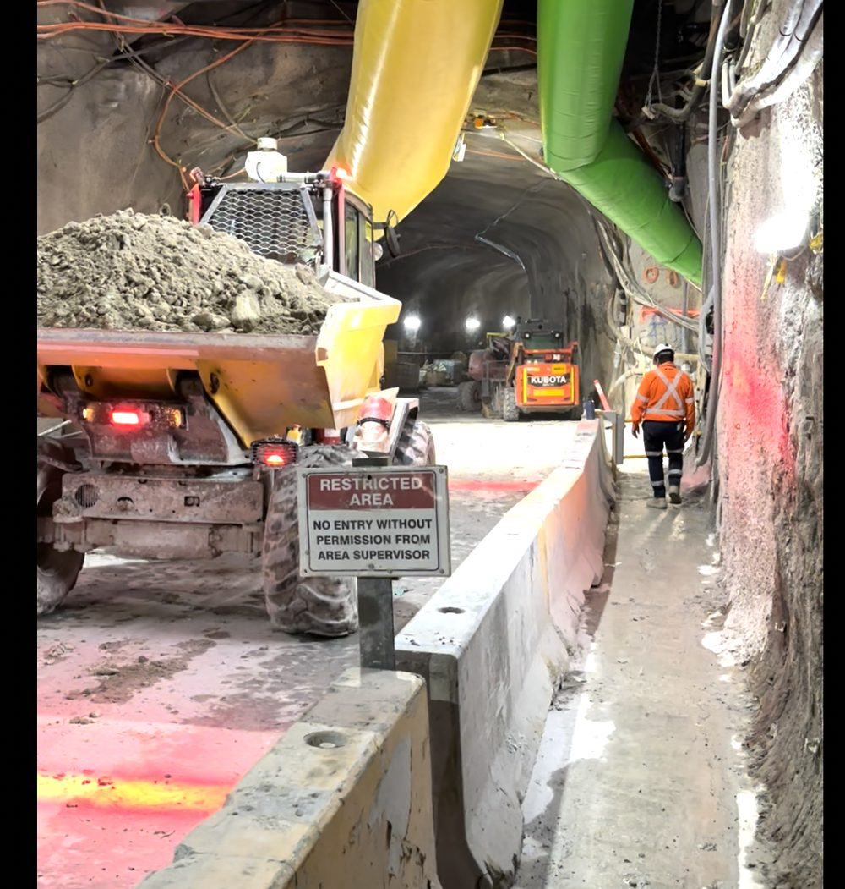
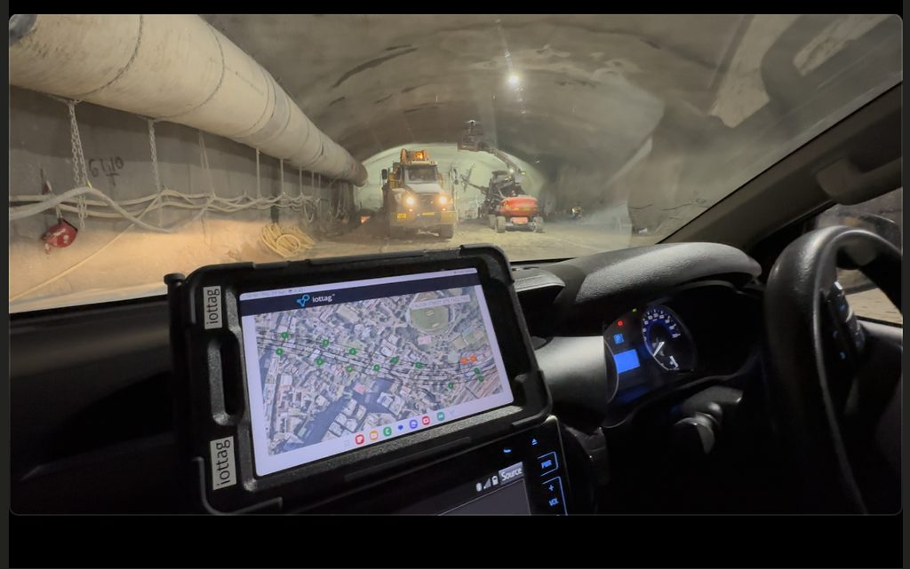

Fleet Operations
Connected Fleet
Driving Operational Performance
iottag helps organisations create a real-time understanding of fleet activity, supporting safety, coordination and improved operational performance.
Fleet visibility
Fleet visibility provides operational teams with a clearer understanding of vehicle movement across the operation.
This supports better operational awareness and coordination.

Collision Avoidance & Situational Awareness
Vehicle interactions are one of the most important safety and operational considerations
across mining, tunnelling, construction and infrastructure environments.
The platform helps organisations understand:
Vehicle-to-person interactions
Vehicle-to-vehicle interactions
Restricted area activity
Proximity events
High-risk movement zones
Interaction trends
This supports safer operations and stronger situational awareness.
Cycle time tracking
Cycle time visibility helps organisations understand where fleet performance is being influenced.
The platform can support visibility into:
By understanding cycle time components, teams can identify bottlenecks, inefficiencies and improvement opportunities.

Fleet utilisation
Fleet performance is influenced by how vehicles are used throughout the operation.
The platform helps teams understand:
This supports better planning, resource allocation and operational performance.

Traffic flow &
congestion management
Congestion can influence safety, productivity and site efficiency.
iottag helps organisations understand:
This provides teams with visibility to improve traffic management and reduce operational disruption.

Traffic Control Automation
iottag automates critical safety controls across the worksite. Using real-time operational intelligence, the platform can control traffic signals, lock access gates and activate warning systems as conditions change.
This helps coordinate people and vehicles, reduce collision risk and create safer, more efficient operations.

Connected Heads-Up Display
The HUD is more than an in-vehicle display, it is a connected operational safety system.
Operators receive a live view of nearby people, vehicles, equipment, traffic flow and collision risks, while also receiving real-time blast notifications, safety alerts and operational messages.
Two-way communication enables operators to raise an SOS with their exact location, request assistance, and communicate directly with nearby vehicles and site teams.
By keeping operators continuously connected to the wider operation, iottag improves situational awareness, coordination and safety in rapidly changing environments.

AI-powered fleet insight
The platform can help translate fleet information into clear operational summaries.
Fleet Performance Alert
Cycle times have increased across the southern haul route.
Queue time near the loading area has increased over the previous shift, while vehicle density remains elevated around the primary access route.
Current conditions may influence production performance if congestion continues.
Recommended Action:
Review traffic flow, loading area activity and vehicle allocation across the affected route.

Improve fleet visibility, safety and performance
Understand how vehicle activity influences safety, productivity and operational outcomes.